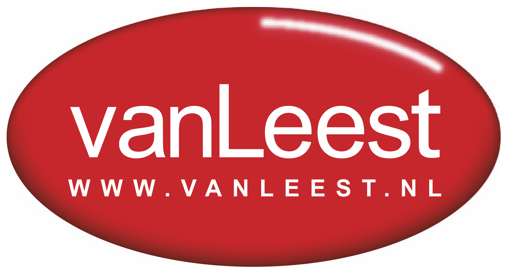

대표 로고대표 브랜드 마크
대표 로고대표 브랜드 마크Van Leest
Van Leest는 네덜란드의 리테일·커머스 브랜드로, 상품 큐레이션, 가격 체계, 매장·온라인 유통, 구매 편의성이 브랜드 인식을 좌우하는 영역입니다.
최종 업데이트
Van Leest는 어떤 브랜드인가
반 레스트(Van Leest)는 네덜란드 위트레흐트에 자리한 골동 과학·의료 기구 전문 딜러 반 레스트 앤티크스(Van Leest Antiques)를 가리킨다. 도심 가장자리 마리아플라츠에 매장을 두고 현미경, 망원경, 기압계, 지구의·천구의, 항해 기구, 약학 용품, 그리고 19세기 오주(Auzoux) 해부 모형까지 취급한다.
운영자 톤 반 레스트(Toon Van Leest)는 본업이 치과의사이면서 수집가 출신 딜러로, 유럽 전역의 박람회·경매·동업 딜러를 순회하며 재고를 확보한다는 점이 첫 번째 전환점이고, 온라인 플랫폼을 통해 국제 수집가에게 직접 판매망을 넓힌 것이 두 번째 전환점이다. 정식 직원 규모는 미공개이나, 한정된 영업시간(수~토 오후)으로 운영되는 전문 소규모 부티크형 실체다.
Van Leest는 어떻게 봐야 할까
반 레스트의 핵심 경쟁력은 규모가 아니라 큐레이션의 깊이에 있다. 대량 유통이 아닌, 학술적 희소성과 보존 상태로 가치를 매기는 영역에서 딜러 개인의 감식안이 곧 브랜드 자산이 된다.
운영자가 의료 전문직(치과의사)이라는 배경은 의료·해부 기구 분야에서 진위 판별과 설명력에 신뢰를 부여하는 차별점으로 작동한다. 전략 측면에서는 두 축이 뚜렷하다.
첫째, 유럽 박람회·경매를 직접 순회해 공급을 확보하는 오프라인 소싱, 둘째, 전문 마켓플레이스를 통한 국제 직거래다. 시장 함의는 명확하다.
골동 과학기구는 트렌드에 흔들리지 않는 자산이라는 운영자의 관점처럼, 이 시장은 유행보다 역사적 진위와 학술 가치로 평가받는 수집가 중심 생태계다. 한국 독자 맥락에서 보면, 의료기기·정밀광학 강국이면서도 산업 유물에 대한 체계적 골동 시장이 얇은 국내 현실과 대비되며, 박물관·연구소·디자인계가 참고할 만한 전문 딜러 모델을 제시한다.
Van Leest는 어떻게 시작되고 성장했나
19세기 이래 유럽은 현미경, 천체 기구, 의료·해부 모형 같은 정밀 과학기구의 황금기를 거쳤고, 이 유물들은 오늘날 학술 수집의 대상이 되었다. 반 레스트 앤티크스는 이러한 유산을 다루는 위트레흐트 기반 전문 딜러로 출현했다.
정확한 창립 연도는 미공개이나, 운영자 톤 반 레스트가 치과의사 본업과 병행하는 수집가 겸 딜러로서 사업을 일군 구조가 확인된다. 첫 번째 전환점은 단순 매장 판매를 넘어 유럽 전역의 트레이드 페어·경매·동업 딜러를 적극 순회하며 재고를 확보하고 고객의 까다로운 의뢰까지 충족하는 능동적 소싱 체계를 갖춘 것이다.
두 번째 전환점은 전문 온라인 마켓플레이스에 지속 출품하며 국제 수집가 네트워크로 판로를 확장한 것이다. 취급 범위도 의료·과학 기구에서 항해 기구, 지구의·천구의, 수은 기압계, 그리고 1827년 설립된 오주 공방의 해부 모형 같은 특화 카테고리로 넓혀 왔다.
정확한 확장 연도별 이력은 미공개다.
Van Leest의 브랜드 아이덴티티는 무엇인가
반 레스트가 내세우는 가치는 시간을 견디는 진정성이다. 골동품은 유행에 좌우되지 않는 안정적 가치이며 결코 아름다움을 잃지 않는다는 운영자의 신념이 브랜드 철학의 중심에 있다.
비주얼 아이덴티티는 화려함보다 유물 자체를 주인공으로 삼는 절제된 방식으로, 정밀 기구와 해부 모형의 학술적 디테일을 충실히 보여주는 사진과 설명에 방점을 둔다. 타깃은 박물관, 연구기관, 그리고 과학사·의학사 수집가 등 전문 식견을 갖춘 고객층이다.
브랜드 보이스는 전시 큐레이터에 가깝다. 과장된 판촉 대신 각 기구의 제작자, 시대, 용도, 보존 상태를 차분히 해설하는 학예적 어조가 일관된다.
Van Leest의 대표 제품과 서비스는 무엇인가
취급 품목은 골동 과학·의료 기구가 중심이다. 현미경과 망원경 등 광학 기구, 기계식 기구, 수은 기압계, 지구의·천구의, 항해 기구, 외과·안과 등 의료 기구, 약학 용품, 그리고 인체·동물·식물 등 오주 해부 모형이 대표적이다.
판매 채널은 위트레흐트 마리아플라츠의 예약제 오프라인 매장, 자사 웹사이트와 인스타그램, 그리고 전문 마켓플레이스를 병행한다.
Van Leest는 지금 어떤 상태인가
본사 소재지는 네덜란드 위트레흐트 마리아플라츠다. 지배구조는 운영자 톤 반 레스트 개인이 소유·운영하는 전문 딜러 형태로 확인되며, 별도 모회사나 법인 지분 구조는 미공개다.
영업은 수요일부터 토요일 오후 시간대로 운영되는 현행 상태이며, 자사 웹·인스타그램과 국제 전문 마켓플레이스를 통한 판매가 지속되고 있다. 직원 수, 연 매출 등 세부 규모 지표는 미공개다.
Van Leest 로고는 어떻게 변해왔나
대표 로고대표 브랜드 마크
대표 로고 1보관 이미지 1자주 묻는 질문
Van Leest는 어느 나라 브랜드인가요?
Van Leest는 네덜란드의 리테일·커머스 브랜드입니다.
Van Leest의 브랜드 아이덴티티는 무엇인가요?
반 레스트가 내세우는 가치는 시간을 견디는 진정성이다.
Van Leest의 대표 제품은 무엇인가요?
취급 품목은 골동 과학·의료 기구가 중심이다.
Van Leest는 현재 어떤 상태인가요?
본사 소재지는 네덜란드 위트레흐트 마리아플라츠다.
출처와 검증
브랜드명은 한글과 원어를 함께 표기하되 데이터에 없는 표기는 만들지 않습니다. 기원 국가·설립연도는 검수된 정의문에서 확인된 값을 우선하고, 없을 때만 공식 웹사이트 URL이 일치하는 위키데이터 개체의 값을 씁니다.